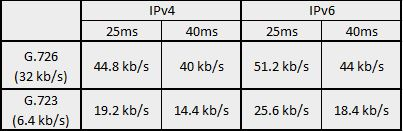
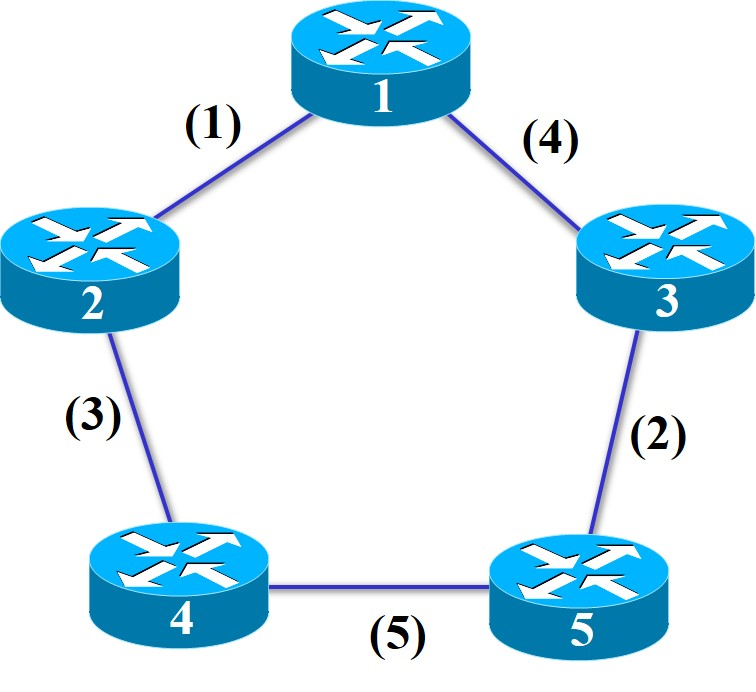
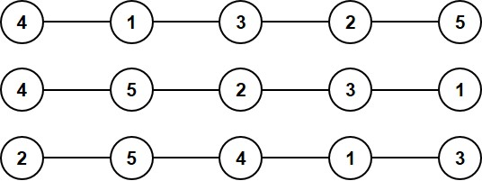
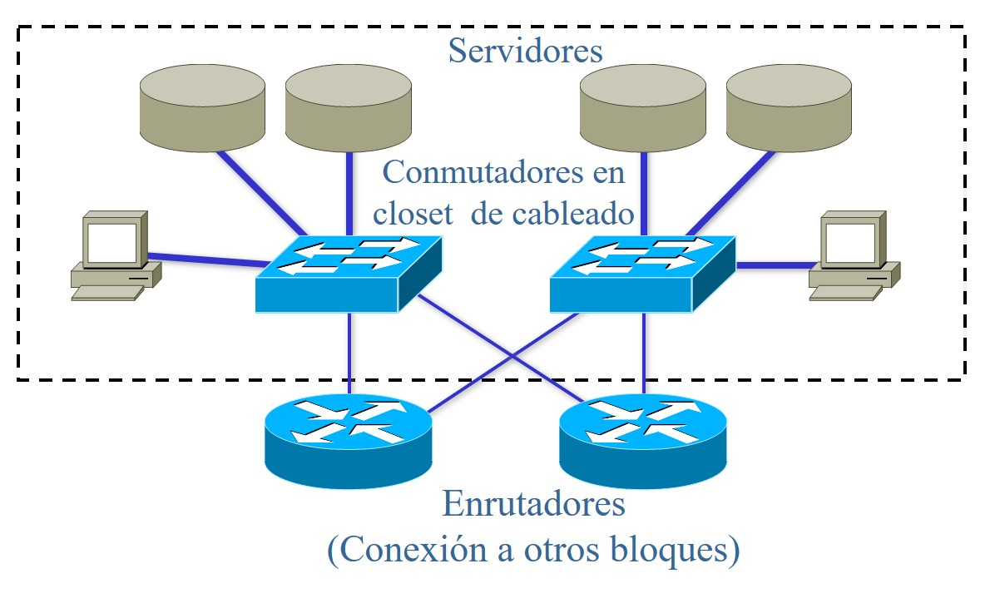

Capítulo 8 Respuestas a problemas seleccionados
8.1 Metodología de diseño de redes
Problema 1.2
- Requerimientos incompletos
- Falta de involucramiento del usuario
- Falta de recursos
Problema 1.5
Sí: Para el desarrollo de infraestructura, si hemos hecho un buen trabajo de pruebas e integración en la fase de desarrollo, la estabilización de la solución puede incorporarse a la fase de despliegue.
Problema 1.7
Para evitar las principales causas de fracaso identificadas en los reportes CHAOS. Una visión clara y compartida ayuda a que todos los involucrados en el proyecto entiendan con precisión lo que se busca y lo que se obtendrá.
Problema 1.12
No: No cumple con los objetivos SMART. No están definidos claramente en términos cuantitativos.
Problema 1.15
Gerente de programa.: Es el arquitecto principal del proyecto y lo administra. Mantiene los compromisos adquiridos en el Plan Maestro y Calendario Maestro. Coordina y facilita la comunicación con los demás miembros del equipo. Gestiona y evalúa el plan de riesgos.
Gerente de producto.: Interfaz con el cliente, es responsable de definir y mantener la visión conjunta del proyecto a través de la identificación de objetivos realistas y su transformación en requerimientos específicos.
Desarrollo.: Diseña la solución y dimensiona tiempos y recursos necesarios. La implementa o supervisa su implementación y prepara la etapa de despliegue.
Pruebas.: Comprueba la correcta funcionalidad de la solución a través del diseño y puesta en marcha del programa de evaluación.
Experiencia del usuario.: O capacitación, administra los requerimientos del usuario, participa en la decisión al confrontar facilidad de uso contra rendimiento, capacita al usuario.
Administrador de liberaciones.: Controla la logística para liberar y desplegar la solución. Administra las operaciones de soporte y entrega.
Problema 1.20
Mitigar el riesgo significa tomar las medidas necesarias para anularlo o al menos para minimizar que éste se manifieste.
El plan de contingencia consiste en definir las acciones a tomar si el riesgo se manifiesta con el fin de minimizar su impacto.
8.2 Requerimientos técnicos
Problema 2.1
Porque los modelos de trabajo, en particular en lo que se refiere al
almacenamiento y difusión de información en las empresas, están
cambiando. Por ejemplo, la decisión de centralizar los servidores
(granjas de servidores) el acceso centralizado a información de la
compañía a través de servidores WWW en intranets provocan un enorme
flujo de información entre la LAN departamental y la LAN donde se
concentran los servidores.
Problema 2.4
- Contar con un muy buen sistema de administración y monitoreo que permita detectar anticipadamente fallos o condiciones potenciales de fallo en la red.
- Documentar los incidentes (fallos, causas y pasos para su reparación) y contar con un sistema de mesa de ayuda que permita minimizar el tiempo de reparación y puesta en funcionamiento.
- Contar con equipos y enlaces redundantes y/o de respaldo para mantener la continuidad de operaciones.
Problema 2.8
Se pierde dinero durante el tiempo de reparación, MTTR.
Un año = \(365\times 24\times 60 = 525,600\,min\)
(a) \[\texttt{MTTR}= \frac{525,600\times (1-0.999)}{ 0.999} = 526.126\,min \rightarrow 526.126\times \$500.00 = \$263,063.00\]
(b) \[\texttt{MTTR}= 52.56\,min \rightarrow 52.56\times \$500.00 = \$26,282.62\]
(c) La empresa puede tener hasta 60 min de caídas al año, por lo que la disponibilidad de su red debe ser: \[A = \frac{\texttt{MTBF}}{\texttt{MTBF}+\texttt{MTTR}} =\frac{525,540}{525,600} = 99.988\%\]
Problema 2.13
Ignorando todos los demás elementos, el throughput, (\(\zeta\)), estará determinado por la tasa a la que se pueden emitir ventanas. Esta tasa puede estar limitada por el retardo de propagación o por la capacidad del enlace.
El retardo de propagación es: \[\frac{4\times 36,000}{300,000}=0.48\,s\]
En el primer caso, el retardo de transmisión es: \[\frac{512\times 8}{64000}=64\,ms\] En este caso, la latencia es el elemento determinante. El throughput es: \[\zeta=\frac{512\times 8}{0.48}=8533\,\text{b/s}\]
En el segundo caso, el retardo de transmisión es: \[\frac{15\times 512\times 8}{64,000}=0.960\,s\] Ahora, y en el tercer caso, la transmisión está limitada por la capacidad del enlace, por lo que \(\zeta=64\,\text{kb/s}\).
Problema 2.15
- (a) Cada paquete "consume" un espacio de: \(b=(1,518+8+12)*8 =12,304\,bits\).
En una red FastEthernet (\(100\,Mb/s\)), se pueden enviar: \[\frac{100 Mb}{12,304 b} = 8,127\,p/s\]
- (b)
\[\frac{8\,127\times 1,518\times 8}{100\,M} = 98.694\%\]
Problema 2.20

Problema 2.26
(a) El retardo de propagación es de: \(\frac{1,000\, km}{200,000\,km/s} = 5\,ms.\)
(b) Suponiendo que se transmiten ventanas completas, pueden enviarse \(24 \times 1,024 \times 8 = 196,608\,bits\) antes de recibir un acuse de recibo. El tiempo de transmisión es de: \[\frac{196,608 bits}{622\,Mb/s} = 309\,\mu s;\]
La red está limitada en latencia.
(c) Se necesita un tiempo de ida y vuelta (
RTT) para recibir el acuse de recibo y poder enviar otra ventana. Por consiguiente, el throughput máximo es: \[\frac{196,608\,bits}{0.01\,s} = 19.7\,Mb/s\](d) La eficiencia es: \[\frac{19.7\,Mb/s}{622\,Mb/s} = 3.16\%\]
8.3 Caracterización de la red
Problema 3.1
El baselining permite obtener un punto de referencia contra el cual evaluar el desempeño de la red propuesta. Además permite identificar problemas con la red actual. Básicamente consiste en evaluar el desempeño de la red actual y se realiza mediante las herramientas apropiadas de colección de información (monitores, analizadores, herramientas de administración, etc.). Las principales dificultades para este tipo de estudio son la definición de un período y frecuencia de recolección apropiados.
Problema 3.7
La congestión es una degradación en el rendimiento debido a un exceso de paquetes en la red o en un segmento de ésta. Para contenerla, se pueden usar mecanismos como:
(a) de lazo abierto.: La fuente es responsable de no emitir más paquetes que los convenidos con el proveedor a fin de que el dimensionamiento estimado cumpla con lo previsto (traffic engineering). Mecanismos típicos para conformar el tráfico a lo convenido son Leaky bucket y Token bucket.
(b) de lazo cerrado en los extremos.: El extremo receptor monitorea la calidad de la información recibida (p.e. pérdidas de paquetes) y notifica a la fuente. Si se detectan pérdidas, la fuente reduce su tasa de transmisión. Ejemplos: control de congestión en TCP; mecanismo RTP/RTCP.
(c) reactivo en los nodos de conmutación.: Al detectar congestión, los nodos envían notificaciones a los puntos extremos. Ejemplos: FECN, BECN en Frame Relay; mensajes Source Quench, mecanismo ECN en TCP/IP.
Problema 3.9
El control de congestión de TCP se basa en un mecanismo de
ventanas deslizantes: en un momento dado, se puede enviar hasta una
ventana de información sin haber recibido los acuses de recibo del
destino. Cuando la latencia es muy grande como en una red satelital,
y/o cuando el ancho de banda es muy grande como una red nacional a
velocidades de gigabits por segundo, el tamaño de la ventana puede
resultar demasiado pequeño “para llenar el ducto” de comunicación
entre la fuente y el destino con información en tránsito. Si esto
ocurre, la fuente debe detener su emisión, degradando la eficiencia
de la red.
El RFC-1323 propone varias extensiones a TCP para tratar este
problema. La principal de ellas es el uso de ventanas mayores al
tamaño estándar de 64kBytes. Junto con esta extensión, se proponen
mecanismos para medir con mayor precisión el RTT de la conexión y
protecciones contra el eventual reciclado de números de secuencia.
Problema 3.17
Muchos estudios recientes han mostrado que el tráfico generado por las aplicaciones de red se desvían considerablemente de un proceso de Poisson. Un modelo más apropiado para el tráfico de red parece requerir distribuciones con “cola larga” como la distribución Pareto. Algo que aparentemente puede ser modelado por Poisson son los procesos humanos.
En VoIP, el número de inicios de llamada en un intervalo de tiempo podría ser Poisson y la duración de una llamada podría ser exponencial, pero la generación de paquetes dentro de una llamada es muy probable que no pueda ser un proceso de Poisson.
8.4 Diseño lógico
Problema 4.2
- Firewall: en la capa de distribución;
- VLANs: en de distribución y de acceso, depende de la complejidad de la red;
- Mecanismo de despacho de colas: en el núcleo para implementar PHBs. Si la red es muy grande, tal vez se requieran también en las otras dos capas.
Problema 4.5
| NODO | K=3 Vecinos | Ocurrencias |
|---|---|---|
| 1 | 2, 5, 6 | 1 |
| 2 | 3, 4, 5 | 6 |
| 3 | 2, 4, 5 | 3 |
| 4 | 2, 3, 5 | 6 |
| 5 | 2, 4, 6 | 7 |
| 6 | 2, 4, 5 | 5 |
| 7 | 5, 6, 8 | 4 |
| 8 | 4, 6, 7 | 4 |
| 9 | 7, 8, 10 | 2 |
| 10 | 7, 8, 9 | 2 |
| Frecuencia | Repeticiones |
|---|---|
| 1 | 1 |
| 2 | 2 |
| 3 | 1 |
| 4 | 2 |
| 5 | 1 |
| 6 | 2 |
| 7 | 1 |
\[\bar v = \Big\lfloor\frac{\underset{j=1}{\overset{F}\Sigma} S_j\times j}{N}\Big\rfloor+1 = \frac{1+4+3+8+5+12+7}{10}= 4\]
Los mejores candidatos son aquéllos \(>\bar v\), es decir, \(2, 4, 5, 6\)
Problema 4.8

Problema 4.10
Existen varias soluciones, entre otras:
Problema 4.15

8.5 Administración de Redes
Problema 5.1
- Gestión de fallas.: Se encarga de localizar, aislar y corregir problemas en la red.
- Gestión de configuración.: Es el proceso de obtener datos e información de la red y utilizarlos para gestionar la configuración de los diferentes dispositivos.
- Gestión de seguridad.: La gestión de seguridad no se limita a los mecanismos de seguridad (protocolos, mecanismos de encripción, etc.) sino a toda la política de seguridad que debe implantarse: administración de contraseñas; responsabilidades de los usuarios; seguridad de acceso físico; etcétera.
- Gestión de rendimiento.: Garantizar el acceso contínuo y eficiente a la red mediante el monitoreo de los dispositivos de red y sus enlaces asociados para determinar su utilización, niveles de error, etcétera.
- Gestión contable.: Almacena y procesa datos referentes al consumo de los recursos de la red. Esta información puede ser utilizada para fines de cobro y también como apoyo para planear la capacidad y/o detectar fallas.
Problema 5.5
- Retiene las mejores propuestas de la versión 2 en cuanto a rendimiento (GetBulk, Inform, contadores > 64 bits) y la comunicación administrador - administrador.
- Unifica los mecanismos de seguridad: encripción y autenticación.
- Incorpora mecanismos de administración de agentes.
- Define relaciones entre objetos.
- Proporciona más flexibilidad para definir el protocolo de transporte.
Problema 5.6
02 03 FE 3A 04 // int x = 0xFE3A04;
09 02 <1.23> 09 02 <4.0> // float y[2] = {1.23, 4.0};
16 16 // struct {
28 11 'L''u''i''s'' ''F''e''l''i''p''e' //char nombre =``Luis Felipe'';
02 01 19 // int edad = 25;
01 01 00 //boolean casado = 0; } status;
28 01 'K' //char seccion = 'K';